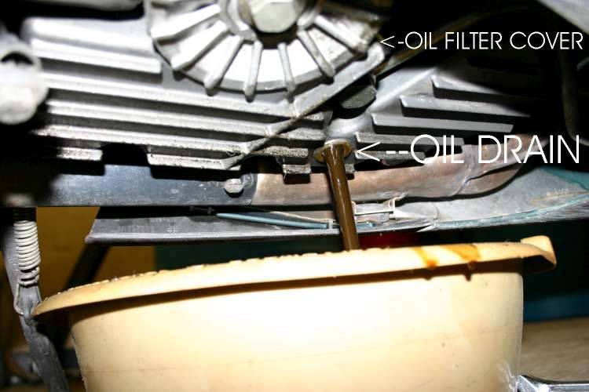
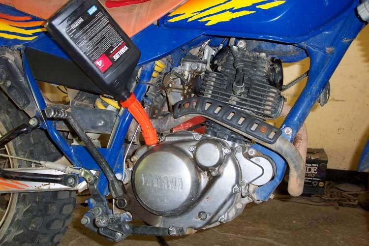

Home mechanic (basic tools) · Time: 40 to 60 min (estimate) (estimate)
Oil wears out: it fills with fine metal, carbon and acid, and it gets thinner. Fresh oil protects the engine and the wet clutch. Many commuter engines have a wire-mesh strainer behind the drain cap and a centrifugal filter (a spinning drum on the crankshaft that throws dirt to its outer wall) inside the right cover. This job cleans the strainer. A centrifugal filter or a paper cartridge needs its own access, seals and torque from your manual; it is not covered here.
Safety
- Hot oil burns. Let the engine cool until you can hold your hand on the cases, but change while still warm so dirt drains out.
- Wear nitrile gloves. Used oil harms skin.
- On the K-Light the strainer screen and spring can jump out when the cap comes off. Keep your face back.
- Take used oil to a collection point. Never pour it on the ground or into drains.
You need
- Oil of the grade, type and quantity in your manual. The K-Light manual gives the quantity but not the grade; get the grade from the dealer or the label.
- A new O-ring or sealing washer for the drain cap.
- Check you have the right plug. Some engines have other plugs near the drain (for the gear stopper spring, for example). Removing the wrong one makes a mess and can damage the gearbox.
- Some engines have two drain bolts, for example older twins. Drain both.
- On some engines with a side drain bolt, a gearshift return spring bolt sits close by. Do not remove it: the spring must then be repositioned, which can mean taking the engine out of the frame. The manual shows which bolt is which.
- Draining while the engine is warm gets more of the old oil out, but very hot oil burns. Running it briefly to warm and mix the oil is enough.
Steps
- Ride or idle for a few minutes to warm the oil, then stop the engine.
- Put the bike upright on the centre stand on level ground. Place the tray under the drain cap.
- Remove the filler cap or dipstick. This lets air in so the oil drains faster.
- Undo the drain cap slowly. Catch the spring and strainer screen.
- Let the oil drain fully. The K-Light manual also says to turn the engine over a few times with the starter to push out more old oil. Skip this unless your own manual includes it.
- Look at the old oil and the screen. Use Inspect drained oil for clues if you see metal, water or a fuel smell.
- Wash the screen in clean solvent or new oil. Replace it if it is torn or bent.
- Check the spring, the cap threads and the cap seal. Fit a new O-ring or washer.
- Refit screen, spring and cap. Tighten by hand first, then to the torque in your manual: filter spring screw cap 15 to 30 N·m (K-Light 125). Use this only on that cap; it is not a value for other plugs or covers.
- Pour in new oil through a clean funnel: 1.1 ± 0.1 L at an oil change (K-Light 125). Pour a little less than the full amount first.
- Refit the filler cap. Start the engine and let it idle without revving: 2 to 3 min (K-Light 125). If an oil light is fitted, it should go out within a few seconds.
- Stop the engine, wait, and check the level with Check the engine oil level. Top up to the upper mark.
- Look under the engine for drips around the cap.
Check your work
- Level is between the marks after settling.
- No leak at the drain cap after a short ride. If it leaks, do not just tighten harder: drain again and check the seal and threads.
- Write the date and odometer reading on a label or in the service book.
- If the oil filter was changed too, the level drops after the first run as the new filter fills. Run the engine for about a minute, let it rest for several minutes, check the level again and top up.
- Dry-sump engines: run the engine for several minutes before reading the level. See Check the oil level on a dry-sump engine.
If it did not fix the problem
- Oil turns black again within a few hundred km: Oil turns black very soon after a change.
- Metal glitter or flakes in the old oil: Metal particles or flakes in the oil.
- Drain cap drips: Oil leaking from the drain plug.
Reference values (K-Light 125)
| Item | Value | PDF page |
|---|---|---|
| Oil change interval | every 3000 km | 51 |
| Oil quantity at oil change | 1.1 ± 0.1 L | 53 |
| Oil quantity after engine rebuild | 1.2 ± 0.1 L | 196 |
| Idle after refill | 2 to 3 min | 53 |
| Filter spring screw cap torque (check it is the same part) | 15 to 30 N·m | 194 |